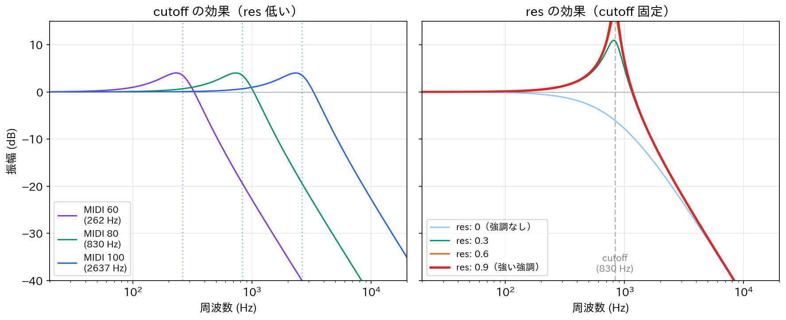

Lesson 5: Sonic Piで音色をコントロール¶
このレッスンで学ぶこと¶
- Sonic Pi のシンセパラメータ（
amp,pan,cutoff,res）を使いこなす - ローパスフィルターが倍音を削る仕組みを理解する
- フィルターの操作と Lesson 4 の倍音理論を結びつける
- パラメータを動的に変化させて表現力のあるフレーズを作る
Lesson 4 では Python で「倍音のレシピが音色を決める」ことを学びました。このレッスンでは Sonic Pi に戻り、シンセパラメータとフィルターを使って音色をリアルタイムにコントロールします。理論で理解したことを、手と耳で確かめていきましょう。
5.1 シンセパラメータの基本¶
Lesson 3 では play :c4 のように音名だけを指定しました。実は play にはさまざまなパラメータを渡すことができます。
パラメータは 名前: 値 の形でカンマ区切りで並べます。主なパラメータを見ていきましょう。
amp — 音量¶
amp は音量（amplitude）です。1.0 がデフォルト、0 で無音、1 より大きくすると増幅されます。Lesson 1 で学んだ振幅の概念そのものです。
pan — 左右の定位¶
pan は音の左右の位置（パンニング）を指定します。-1 が左、0 が中央、1 が右です。ヘッドフォンで聞くと違いがはっきりわかります。
amp と pan を組み合わせる¶
use_synth :saw
live_loop :pan_demo do
play :e4, amp: 0.6, pan: -0.8
sleep 0.5
play :g4, amp: 0.4, pan: 0.8
sleep 0.5
end
左から低めの音、右から高めの音が交互に鳴ります。amp と pan の組み合わせだけでも、音に空間的な動きが生まれます。
5.2 cutoff — フィルターで音色を変える¶
ここからが本レッスンの核心です。次のコードを聞き比べてください。
use_synth :saw
play :c4, cutoff: 130
sleep 1
play :c4, cutoff: 100
sleep 1
play :c4, cutoff: 80
sleep 1
play :c4, cutoff: 60
同じノコギリ波の C4 なのに、cutoff の値を下げるほど音がくぐもっていきます。何が起きているのでしょうか。
ローパスフィルターの仕組み¶
cutoff はローパスフィルター（low-pass filter）のカットオフ周波数を MIDI 番号で指定するパラメータです。ローパスフィルターは、指定した周波数より高い成分を減衰させます。
Lesson 4 で学んだことを思い出しましょう。ノコギリ波はすべての整数次倍音を含み、\(k\) 番目の倍音の振幅は \(1/k\) に比例します。ローパスフィルターはこの倍音のうち、カットオフ周波数より高いものを削り取るのです。
| cutoff の値 | おおよその周波数 | 効果 |
|---|---|---|
| 130 | 約 4186 Hz | ほぼフィルターなし。明るく鋭い音 |
| 100 | 約 2637 Hz | 高次倍音が少し削られる。やや柔らかい |
| 80 | 約 830 Hz | 中高域の倍音が大幅に減る。くぐもった音 |
| 60 | 約 262 Hz | C4 の基本周波数付近。ほぼサイン波 |
cutoff: 60 は C4 の基本周波数（約 262 Hz）に近いため、倍音がほとんど残らずサイン波に近い音になります。Lesson 4 で「サイン波だけだと素朴なピーという音」と確認したのと同じ現象が、フィルターでも起きています。
cutoff の値と MIDI 番号¶
cutoff の値は MIDI 番号で指定します。MIDI 番号と周波数の対応は Lesson 6 で詳しく扱いますが、ここでは次の目安を覚えておけば十分です。
| MIDI番号 | 音名 | 周波数 |
|---|---|---|
| 60 | C4 | 262 Hz |
| 80 | G#5 | 831 Hz |
| 100 | E7 | 2637 Hz |
| 120 | C9 | 8372 Hz |
| 130 | A#9 | 14917 Hz |
MIDI 番号が 12 上がると周波数が2倍（1オクターブ上）になります。
5.3 cutoff を動かして音色変化を体験する¶
cutoff を徐々に変化させると、音色がリアルタイムに変わる様子を体験できます。
use_synth :saw
live_loop :filter_sweep do
note = :c3
80.times do |i|
play note, cutoff: 50 + i, release: 0.15, amp: 0.5
sleep 0.1
end
80.times do |i|
play note, cutoff: 130 - i, release: 0.15, amp: 0.5
sleep 0.1
end
end
cutoff が上がるとき（50 → 130）は倍音が増えて音が明るくなり、下がるとき（130 → 50）は倍音が減って暗くなります。シンセサイザーの定番テクニックであるフィルタースウィープです。
line を使ったスムーズな変化¶
上のコードは play を連打しているため、音が途切れ途切れになります。control と line を使うと、1つの音のパラメータをスムーズに変化させられます。
use_synth :saw
s = play :c3, cutoff: 60, sustain: 8, release: 1, amp: 0.5
control s, cutoff_slide: 4, cutoff: 130
sleep 4
control s, cutoff_slide: 4, cutoff: 60
play の戻り値を変数 s に保存し、control で途中からパラメータを変更しています。cutoff_slide: 4 は「4拍かけてスムーズに移行する」という指定です。滑らかなフィルタースウィープが聞こえます。
5.4 res — レゾナンス¶
フィルターにはもう1つ重要なパラメータ、レゾナンス（resonance）があります。レゾナンスの効果はシンセによって大きく異なり、:saw や :beep ではほとんど聞き取れません。ここでは効果が最も劇的な :tb303 を使って体験します。
まず2つだけ聞き比べる¶
use_synth :tb303
# レゾナンス控えめ
play :c2, cutoff: 80, res: 0.1, sustain: 2, release: 0.5, amp: 0.5
sleep 3
# レゾナンス強め
play :c2, cutoff: 80, res: 0.9, sustain: 2, release: 0.5, amp: 0.5
2つ目の音に「ビー」と鼻にかかったような癖を感じるでしょうか。cutoff は同じ 80 なので、フィルターで削る範囲は同じです。違うのはカットオフ周波数付近の扱い方です。
res（レゾナンス）は、カットオフ周波数の近くにある倍音を持ち上げるパラメータです。値は 0（強調なし）から 1（最大強調）の範囲で指定します。
イメージとしては、こうです。
res: 0.1— カットオフより上をなだらかに削るだけres: 0.9— カットオフ付近に「山」を作ってから削る。その山が独特の癖になる
図5.1 はフィルターの周波数応答を示したものです。左図は cutoff の位置を変えた場合、右図は cutoff を固定して res を変えた場合です。res: 0.9（赤い線）でカットオフ付近に鋭いピークが立っているのがわかります。

段階的に変えて確認する¶
use_synth :tb303
[0.1, 0.4, 0.7, 0.95].each do |r|
play :c2, cutoff: 80, res: r, sustain: 1.5, release: 0.5, amp: 0.5
sleep 2.5
end
res が上がるにつれて、カットオフ付近の「山」が高くなり、音の癖が強まっていくのがわかります。0.95 まで上げると、フィルター自体が「キーン」と鳴きはじめます。
フィルタースウィープで違いを際立たせる¶
レゾナンスの効果は、cutoff を動かしたときに最もはっきりわかります。次の2つのフィルタースウィープを続けて聞いてみてください。
use_synth :tb303
# レゾナンス控えめ — 素直に明暗が変わるだけ
s = play :c2, cutoff: 60, res: 0.1, sustain: 8, release: 1, amp: 0.5
control s, cutoff_slide: 4, cutoff: 120
sleep 4
control s, cutoff_slide: 4, cutoff: 60
sleep 5
# レゾナンス強め — 「ミョーン」とうねる
s = play :c2, cutoff: 60, res: 0.9, sustain: 8, release: 1, amp: 0.5
control s, cutoff_slide: 4, cutoff: 120
sleep 4
control s, cutoff_slide: 4, cutoff: 60
1つ目は音が明るくなって暗くなるだけですが、2つ目は「ミョーン」と鳴くような、うねりのある変化が聞こえます。これは cutoff が移動するにつれてレゾナンスの「山」も一緒に移動し、そのとき山が通過する帯域の倍音が一瞬強調されるためです。
この音色変化はアナログシンセサイザーの代表的なサウンドで、テクノやエレクトロニカでよく使われます。
レゾナンスの効き方はシンセによって違う¶
レゾナンスの効果はすべてのシンセで同じではありません。シンセの設計によって、res が音色に与える影響が大きく異なります。
# tb303 — res の効果が非常に大きい
use_synth :tb303
play :c2, cutoff: 80, res: 0.9, sustain: 2, amp: 0.5
sleep 3
# prophet — res の効果が大きい
use_synth :prophet
play :c3, cutoff: 80, res: 0.9, sustain: 2, amp: 0.5
sleep 3
# saw — res の効果がほとんどない
use_synth :saw
play :c3, cutoff: 80, res: 0.9, sustain: 2, amp: 0.5
:tb303 や :prophet はレゾナンス付きフィルターが音作りの中心に設計されたシンセなので、res の変化が劇的に聞こえます。一方、:saw は単純な波形生成がメインで、res を変えてもほとんど変化しません。レゾナンスを活かした音作りをしたいときは、シンセの選択が重要です。
5.5 Lesson 4 の加算合成との対比¶
ここで Lesson 4 との関係を整理しましょう。
| アプローチ | 方法 | 倍音の制御 |
|---|---|---|
| 加算合成（Lesson 4） | サイン波を足して音色を作る | 各倍音の振幅を個別に指定 |
| フィルター（Lesson 5） | 倍音を含む波形からフィルターで削る | カットオフ以上の倍音をまとめて減衰 |
加算合成は「足し算」、フィルターは「引き算」のアプローチです。シンセサイザーの世界では、フィルターによる方法を減算合成（subtractive synthesis）と呼びます。
- 加算合成: 倍音を1つずつ精密にコントロールできるが、パラメータが多い
- 減算合成: ノブ1〜2個（cutoff と res）で直感的に音色を変えられる
Sonic Pi のシンセ（:saw, :square など）は、波形を生成してフィルターを通す減算合成の仕組みで動いています。Lesson 4 で倍音のレシピを辞書で渡したのが加算合成、このレッスンで cutoff を回しているのが減算合成——どちらも「倍音の構成を変えて音色を変える」という同じ原理の、異なるアプローチです。
5.6 シンセごとのフィルター特性¶
波形が異なると倍音構成が異なるため、フィルターの効果も変わります。
[:saw, :square, :tri].each do |syn|
use_synth syn
play :c4, cutoff: 130, sustain: 1.5
sleep 2
play :c4, cutoff: 80, sustain: 1.5
sleep 2
end
| シンセ | cutoff: 130 | cutoff: 80 |
|---|---|---|
:saw |
明るく鋭い → | 柔らかく丸い |
:square |
中空で硬い → | こもった柔らかい音 |
:tri |
あまり変化しない → | わずかに暗くなる |
:tri（三角波）はもともと高次倍音が少ない（Lesson 4 で振幅が \(1/k^2\) に比例すると学びました）ため、フィルターをかけても変化が小さいのです。一方、:saw（ノコギリ波）はすべての倍音を豊富に含むため、フィルターの効果が劇的に現れます。
このように、どの波形を選ぶかとフィルターでどう削るかの2つの選択が、減算合成の音作りの基本です。
まとめ¶
このレッスンで学んだことを整理します。
| パラメータ | 役割 | 値の範囲 |
|---|---|---|
amp |
音量 | 0〜（デフォルト 1.0） |
pan |
左右の定位 | -1（左）〜 1（右） |
cutoff |
ローパスフィルターのカットオフ（MIDI番号） | 0〜130 程度 |
res |
レゾナンス（カットオフ付近の強調） | 0〜1 |
| 概念 | 内容 |
|---|---|
| ローパスフィルター | カットオフ周波数より高い倍音を減衰させる |
| レゾナンス | カットオフ周波数付近の倍音を強調する |
| 減算合成 | 倍音の豊富な波形からフィルターで削って音色を作る方法 |
| フィルタースウィープ | cutoff を時間的に変化させる定番テクニック |
Lesson 4 との対応¶
| Lesson 4（Python） | Lesson 5（Sonic Pi） |
|---|---|
| 倍音のレシピを辞書で指定 | cutoff でまとめて制御 |
| サイン波を足す（加算合成） | 波形からフィルターで削る（減算合成） |
| 高次倍音を減らすと丸い音に | cutoff を下げると丸い音に |
| 奇数次倍音のみ → 矩形波的 | :square + フィルター → 変化小 |
| すべての倍音 → ノコギリ波的 | :saw + フィルター → 変化大 |
新しく使ったコマンド・パラメータ¶
| コマンド / パラメータ | 役割 | 例 |
|---|---|---|
amp: |
音量を指定 | play :c4, amp: 0.5 |
pan: |
左右の定位を指定 | play :c4, pan: -1 |
cutoff: |
フィルターのカットオフ | play :c4, cutoff: 80 |
res: |
レゾナンスの強さ | play :c4, res: 0.8 |
control |
発音中のパラメータを変更 | control s, cutoff: 100 |
cutoff_slide: |
cutoff の変化時間 | cutoff_slide: 4 |
次回予告¶
Lesson 6 では Python に戻り、音階と周波数の関係を扱います。平均律の仕組み、MIDI 番号と周波数の変換式を学びます。このレッスンで cutoff の値を MIDI 番号で指定した理由も、そこで明らかになります。